40 سؤال
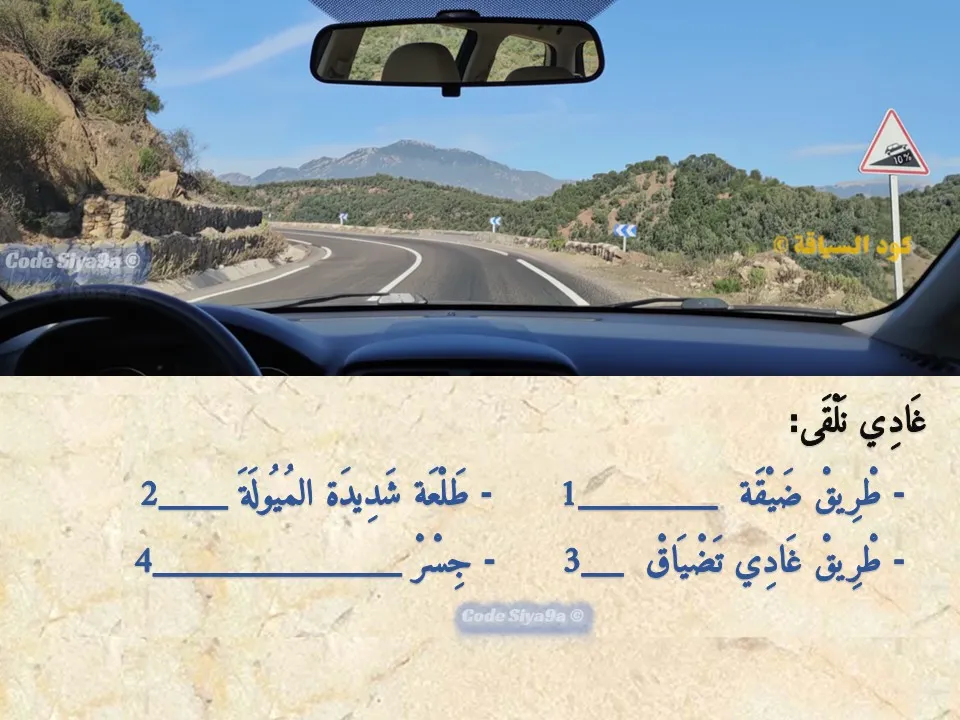
الجواب الصحيح: 2
هذا العلامة ديال الخطر. كتعلم على طريق طلعة مايلة ب نسبة 10 في المئة. يعني شديدة الميولة.
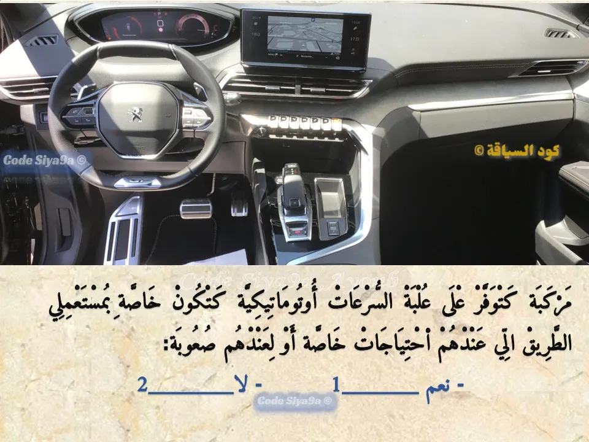
الجواب الصحيح: 2
لا المركبة لي كتوفر على علبة سرعات أوتوماتيكية ،يمكن يستعملها جميع الاشخاص.
- اي مركبة ممكن يتم ادخال عليها بعض التعديلات لكي تتناسب مع حاجيات الأشخاص لي عندهم احتياجات خاصة أو لي عندهم صعوبة .
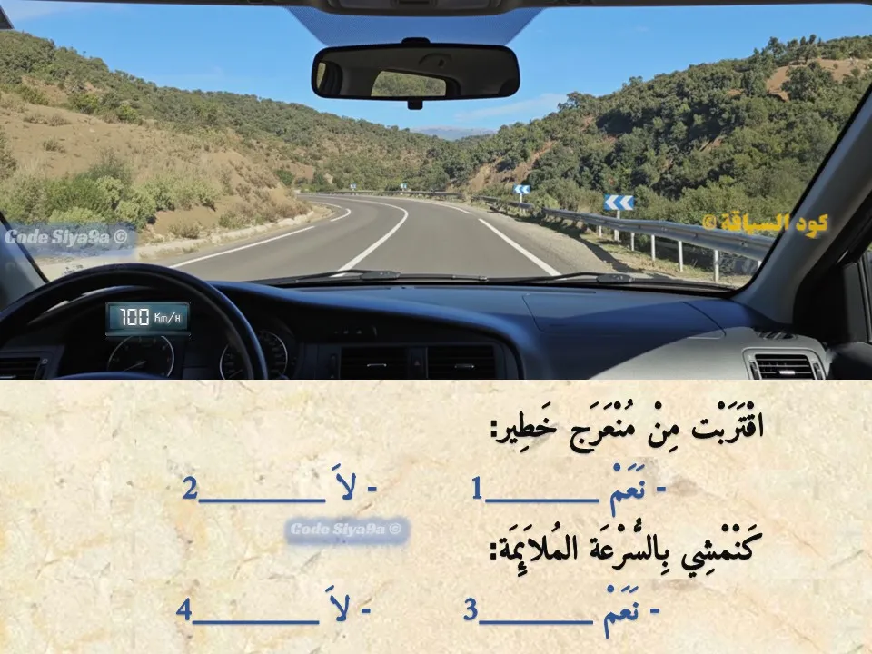
الجواب الصحيح: 1 و 4
التشيور الطرقي كيعلم بلي قربت من منعرج خطير .
- في هذا الحالة كنسير ب 100 كلم في الساعة. لي هي سرعة كبيرة . و بالتالي واحب عليا ننقص من السرعة .
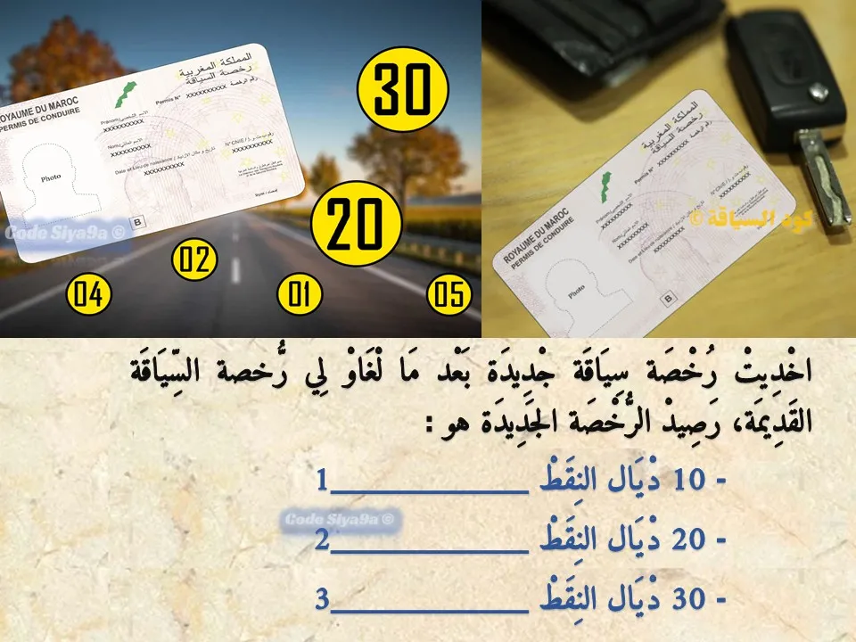
الجواب الصحيح: 2
بعد ما كتم الغاء رخصة السياقة. كيتوجب عليك باش تحصل على رخصة سياقة جديد . يعني تعاود تدوز امتحان نيل رخصة السياقة.
- و بالتالي كتخصع لفترة اختبارية اخرى . برصيد نقطة ديال 20 نقطة و مدة الفترة الإختبارية ديال عامين .
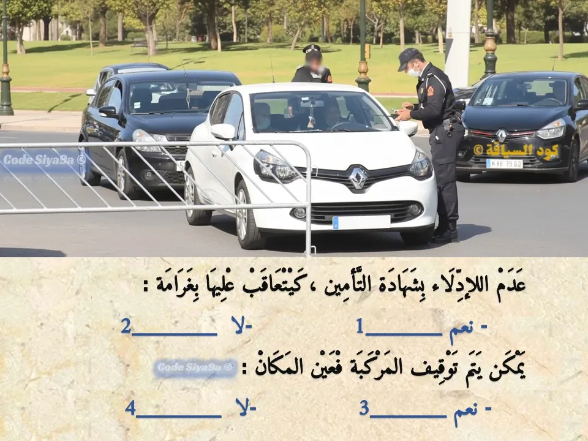
الجواب الصحيح: 1 و 3
عدم الادلاء بشهادة التامين كيتعتبر مخالفة من الدرجة الثالثة .و غرامة مالية من 200 حتى 400 درهم .
و كيتم ايداع المركبة في المحجز .
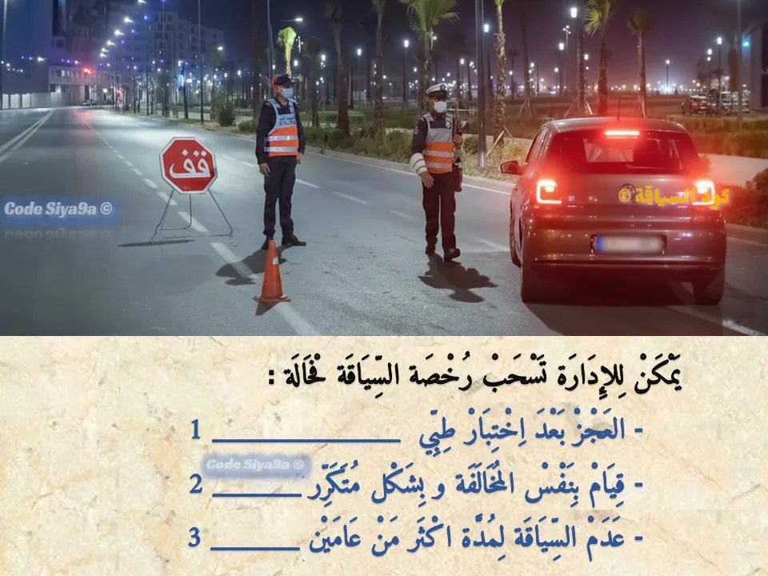
الجواب الصحيح: 1
يمكن للإدارة لي هي الوكالة الوطنية للسلامة الطرقية. تقوم بسحب رخصة السياقة لشخص بعد ما تبين عدم العجز ديالوا بعد اختبار طبي .
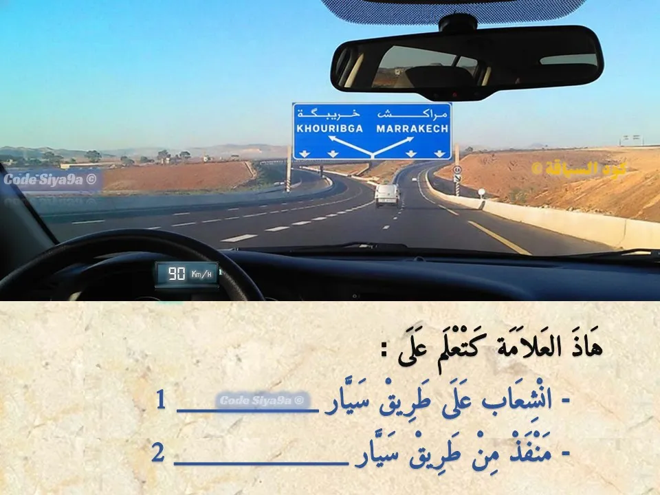
الجواب الصحيح: 1
هذا العلامة ديال الارشاد كتعلم على انشعاب (تشعب )على الطريق السيار.
- الا خديت الطريق لي كتمشي لمراكش غادي ناخط طريق سيار و في نفس الحالة الحالة الا خديت الطريق لي كتمشي لخريبكة غادي نبقى في الطريق السيار.
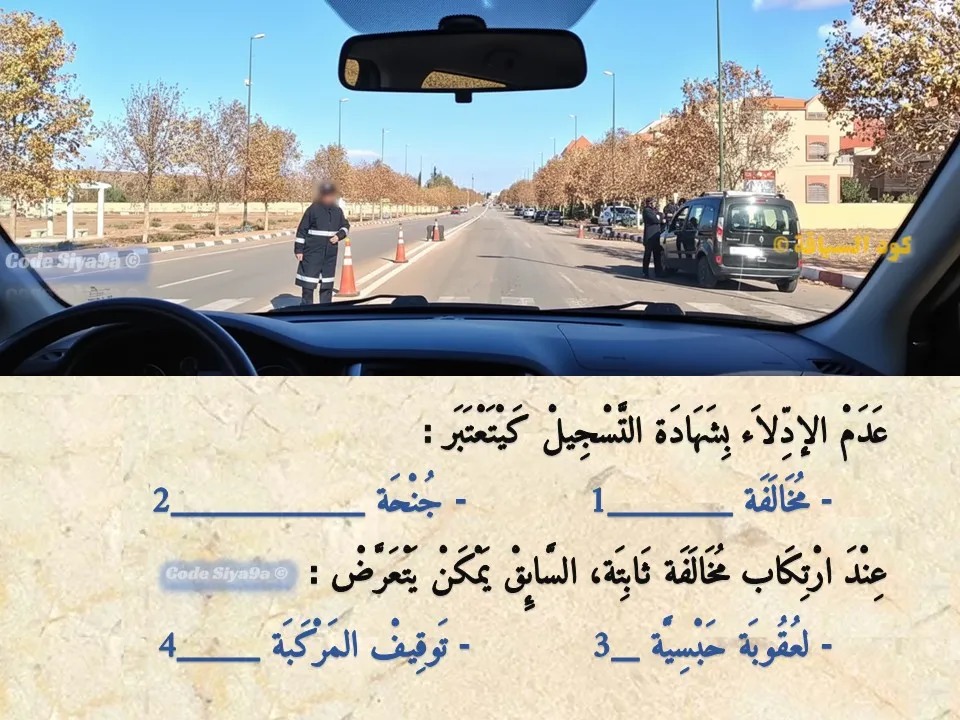
الجواب الصحيح: 1 و 4
عدم الادلاء بشهادة التسجيل كيتعتبر مخالفة كتأدي لتوقيف المركبة الى حين انتهاء المخالفة يعني احضار شهاذة التسجيل عاد يمكن ليك تسترجع المركبة ديالك .
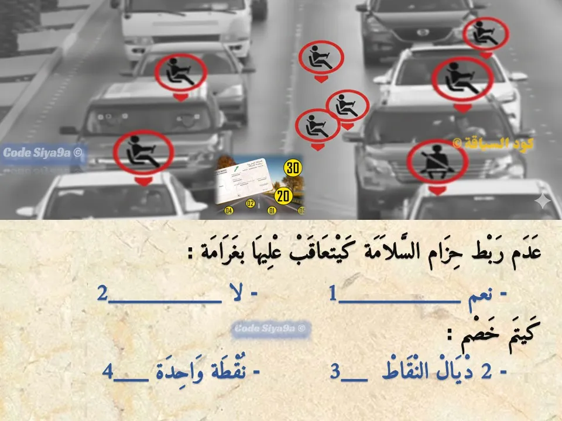
الجواب الصحيح: 1 و 4
عدم ربط حزام السلامة يعتبر مختلفة من الدرجة الثانية. و غرامة مالية ما بين 500 حتى 1000 درهم .
- كتأدي لخصم 1 نقطة من رصيد رخصة السياقة.
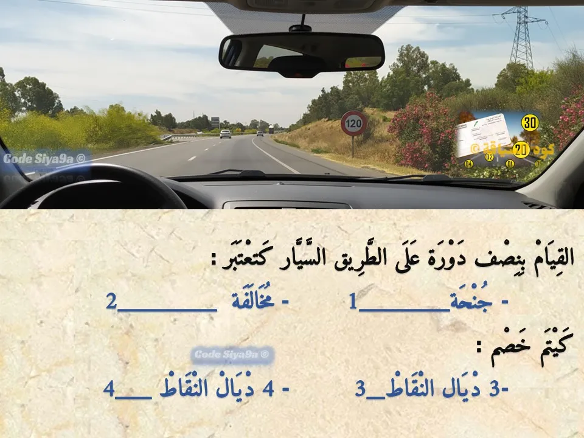
الجواب الصحيح: 1 و 3
القيام بنصف دورة او الرجوع للخلف في الطريق السيار كتعتبر جنحة . كيتعاقب عليها:
- بغرامة من 4000 حتى 8000 درهم . مع توقيف رخصة السياقة لمدة تتراوح ما بين شهر حتى ثلاث اشهر .
- و سحب 3 ديال النقط من رصيد رخصة السياقة.
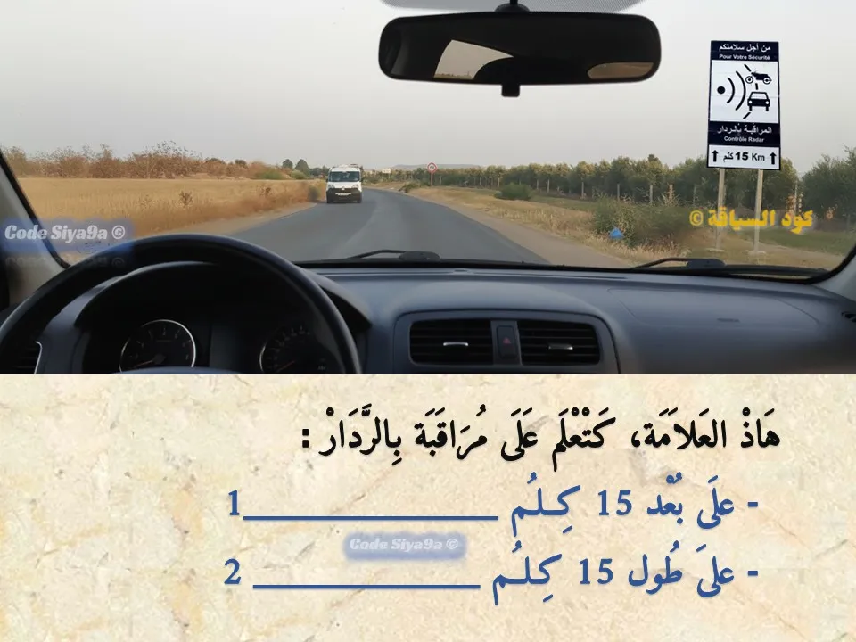
الجواب الصحيح: 2
هذا العلامة ديال الارشاد. كتعلم على مراقبة بالردار.
🫴 اسهم للأعلى كتعلم على مراقبة على طول 15 كلم .
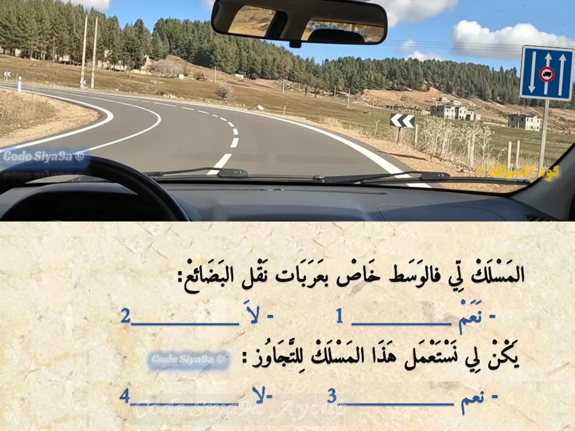
الجواب الصحيح: 2 و 3
هذا العلامة ديال الارشاد كتعلم على تحديد المسالك . هذا التشوير الطرقي كيعلم بلي المسلك لي في الوسط ممنوع ⛔ على عربات نقل البضائع او الشاحنات.
- انا كنسوق سيارة يعني العلامة ما كتعنينيش ، و بالتالي يمكن لي نستعمل المسلك لي في الوسط باش نتجاوز.
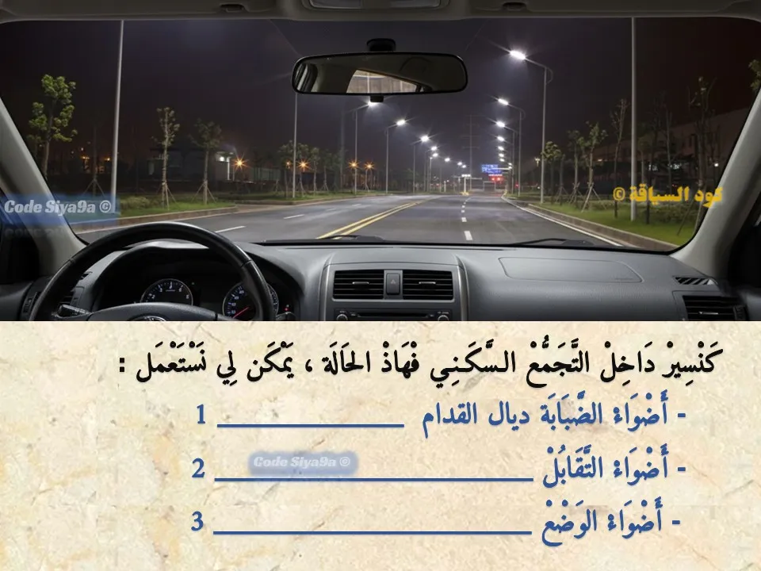
الجواب الصحيح: 2 و 3
في هذا الحالة كنسير داخل التجمع السكني. مع وجود إنارة .
- في غياب الضبابة او الشتاء او الثلج ما عنديش علاش نستعمل اضواء الضبابة ديال القدام حيت كتبهر.
- يمكن لي نستعمل اضواء الوضع بحدهم لان عندي إنارة عمومية .
- يمكن لي نستعمل اضواء التقابل . و يمكن لي نستعمل معاهم حتى اضواء الوضع.
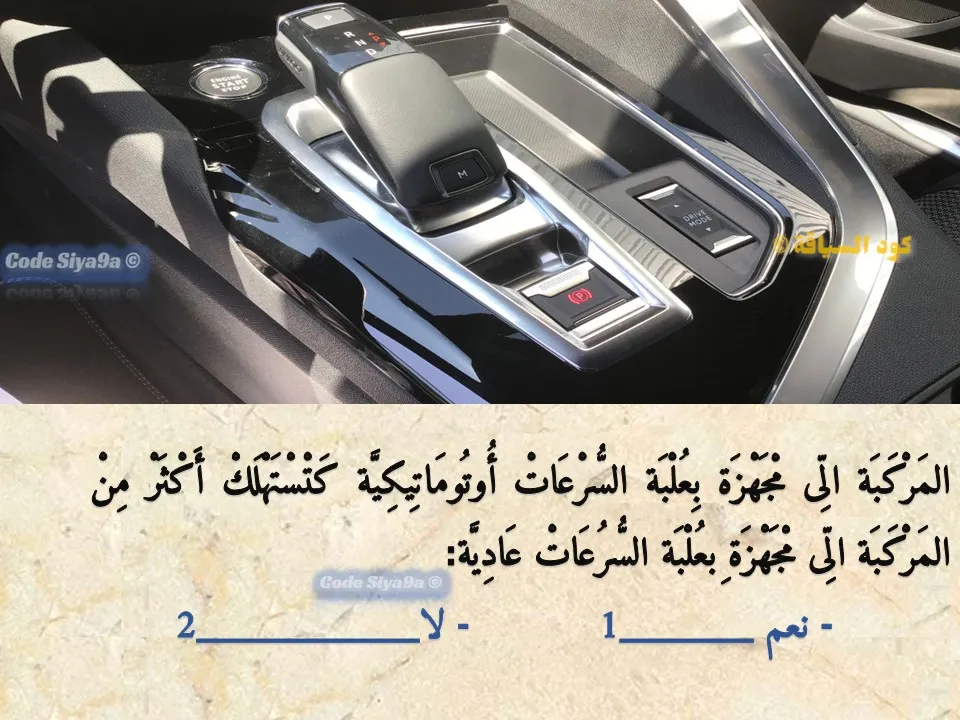
الجواب الصحيح: 1
علبات السرعات الاتوماتيكية. كتستعلك الوقود اكثر من علبات السرعات العادية .
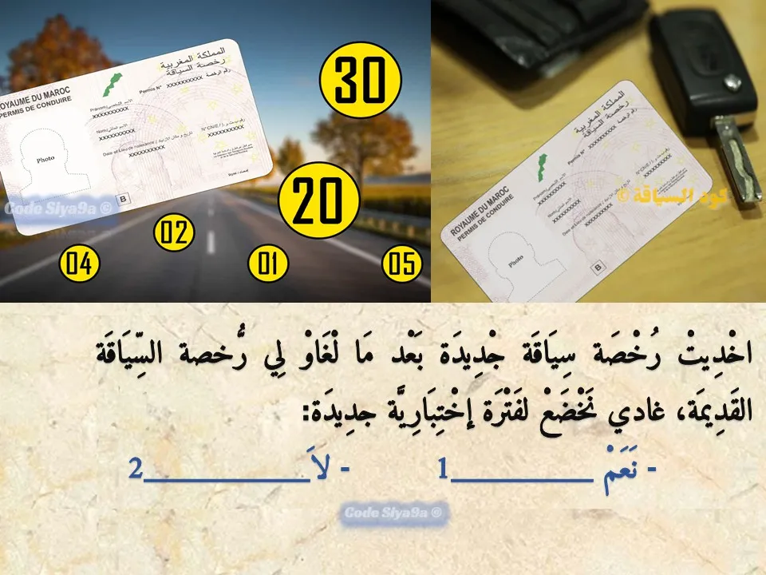
الجواب الصحيح: 1
بعد ما كتم الغاء رخصة السياقة. كيتوجب عليك باش تحصل على رخصة سياقة جديد . يعني تعاود تدوز امتحان نيل رخصة السياقة.
- و بالتالي كتخصع لفترة اختبارية اخرى . برصيد نقطة ديال 20 نقطة و مدة الفترة الإختبارية ديال عامين .
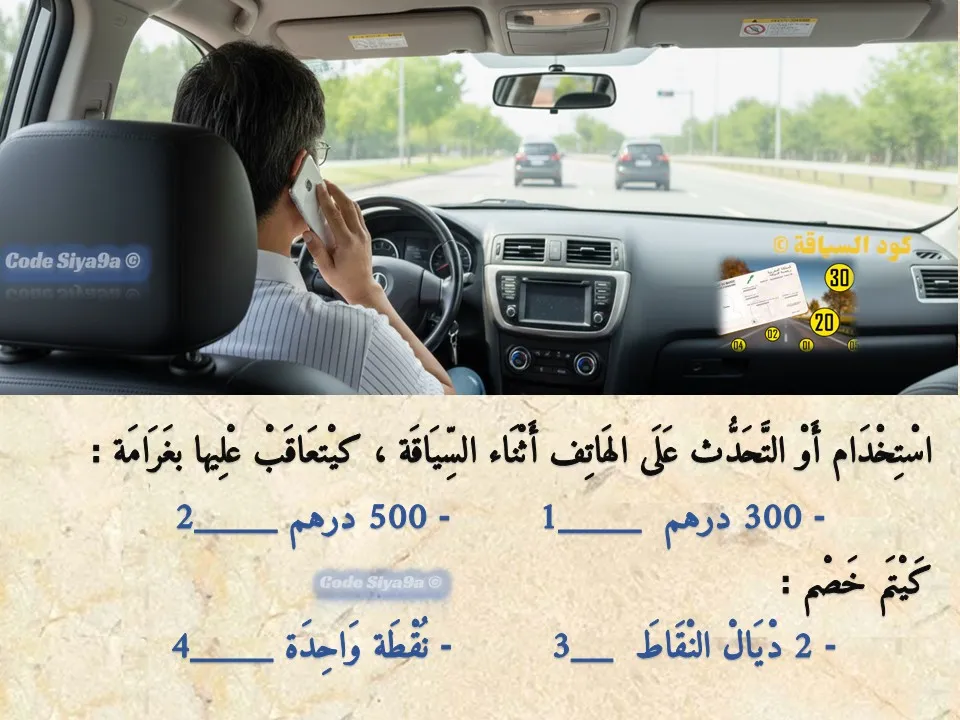
الجواب الصحيح: 2 و 4
استخدام او التحدث على الهاتف ممسوك باليد او اي جهاز اخر يقوم بوظائف الهاتف كيتعتبر مختلفة من الدرجة الثانية. و غرامة مالية ما بين 500 حتى 1000 درهم .
- كتأدي لخصم 1 نقطة من رصيد رخصة السياقة.
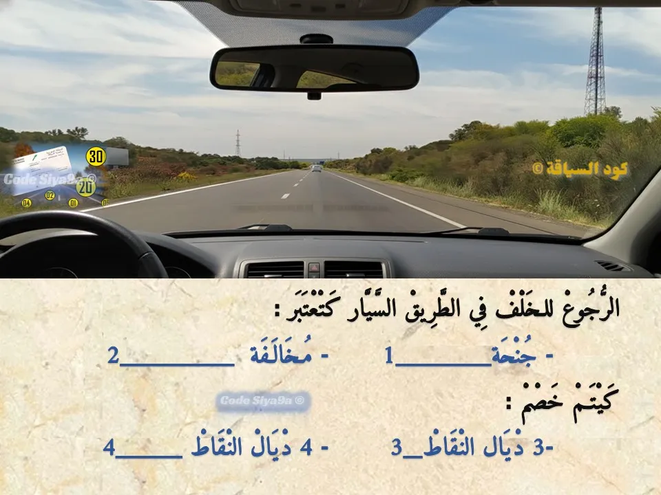
الجواب الصحيح: 1 و 3
القيام بنصف دورة او الرجوع للخلف في الطريق السيار كتعتبر جنحة . كيتعاقب عليها:
- بغرامة من 4000 حتى 8000 درهم . مع توقيف رخصة السياقة لمدة تتراوح ما بين شهر حتى ثلاث اشهر .
- و سحب 3 ديال النقط من رصيد رخصة السياقة.
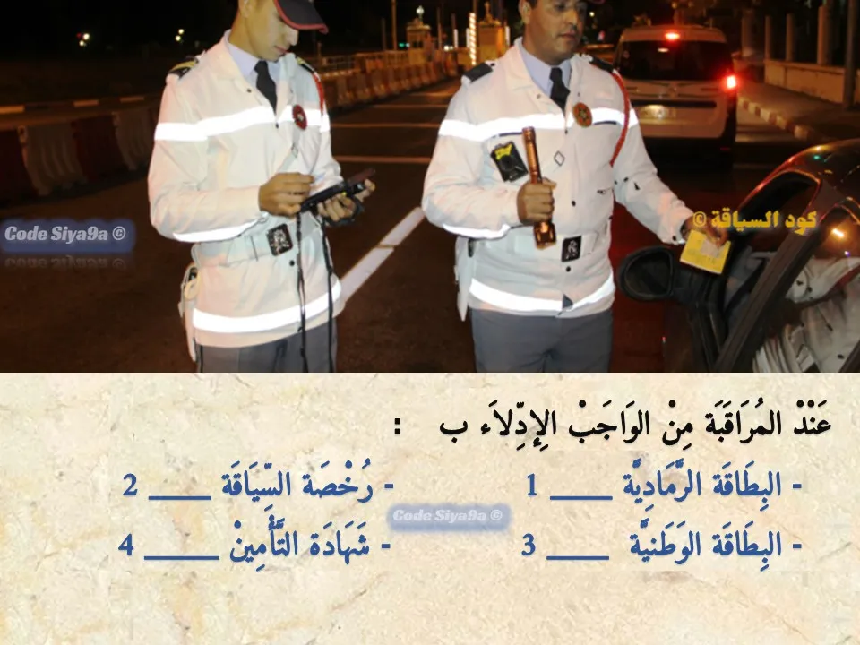
الجواب الصحيح: 1 و 2 و 4
عند المراقبة من الواجب الادلاء بالاوراق الثالية:
- رخصة السياقة.
- شهادة التسجيل.
- شهاذة التأمين.
- الضريبة السنوية .
- و شهادة الفحص التقني بالنسبة للمركبات لي كيتجاوز العمر ديالها 5 سنين .
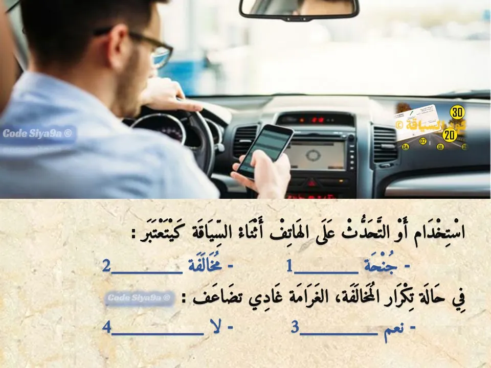
الجواب الصحيح: 2 و 3
استخدام او التحدث على الهاتف ممسوك باليد او اي جهاز اخر يقوم بوظائف الهاتف كيتعتبر مختلفة من الدرجة الثانية. و غرامة مالية ما بين 500 حتى 1000 درهم .
- كتأدي لخصم 1 نقطة من رصيد رخصة السياقة.
🚨في حالة تكرار المخالفة في نفس العام كيتم مضاعفة الغرامة .
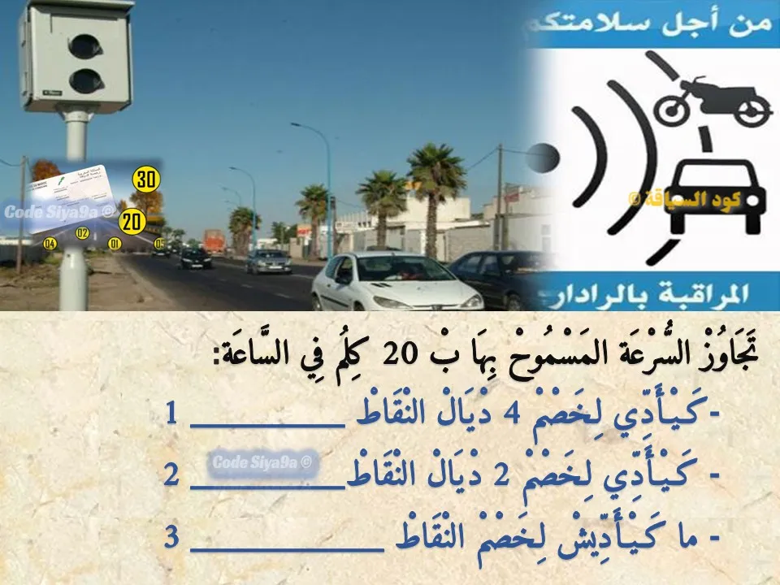
الجواب الصحيح: 3
تجاوز السرعة ب 20 كلم في الساعة ، كيتعتبر مخالفة من الدرجة الثانية. كتعرض السائق لغرامة ما بين 500 حتى 1000 درهم .
- و ما كيأديش لخصم النقط من رصيد رخصة السياقة.
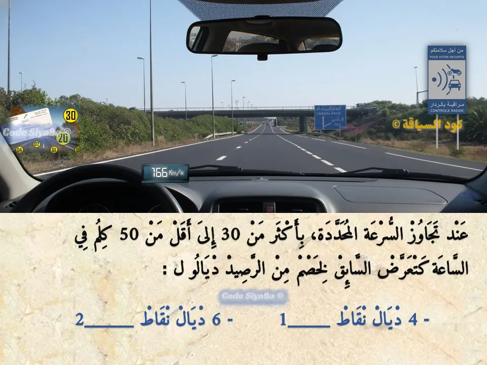
الجواب الصحيح: 1
تجاوز السرعة بأكثر من 30 كلم في الساعة ، كيتعتبر مخالفة من الدرجة الأولى . كتعرض السائق لغرامة ما بين 700 حتى 1400 درهم .
- و خصم 4 ديال النقط من رصيد رخصة السياقة.
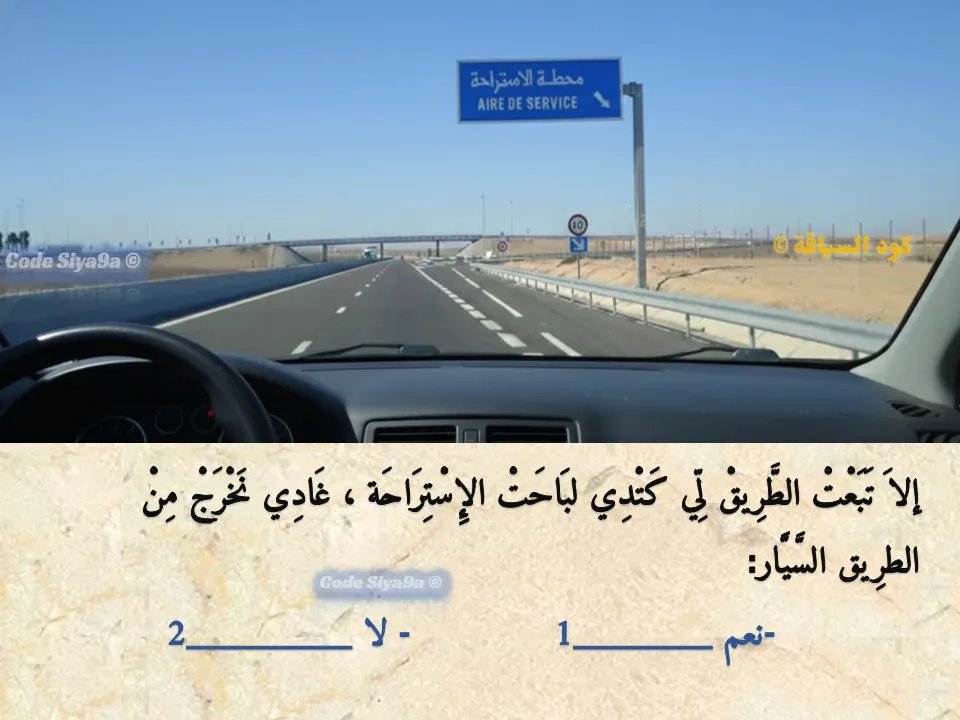
الجواب الصحيح: 2
باحة الاستراحة هي جزء من الطريق السيار. كتمكن مستعملي الطريق السيار من الاستراحة و كذالك التزود بالوقود و...... .
الا خرجت لهذا باحة الاستراحة غادي نبقى في الطريق السيار.
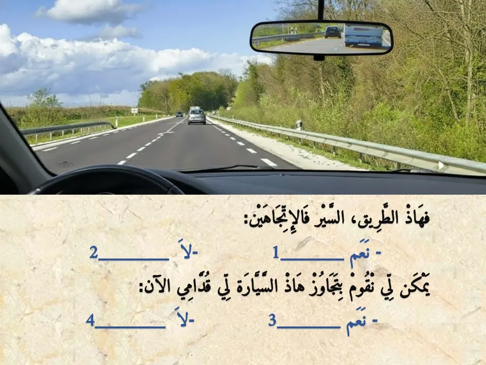
الجواب الصحيح: 1 و 4
التشوير الطرقي (الخطوط المتقطعة على ليسر و ليمن ) كيعلم بلي حركة السير في الاتجاهين .
- اسهم الانحياز كيعلنوا بلي التجاوز غادي يصبح ممنوع .
- بالإضافة لوجود مركبة في الإتجاه المقابل .
و بالتالي ما يمكنش لي نتجاوز الآن.
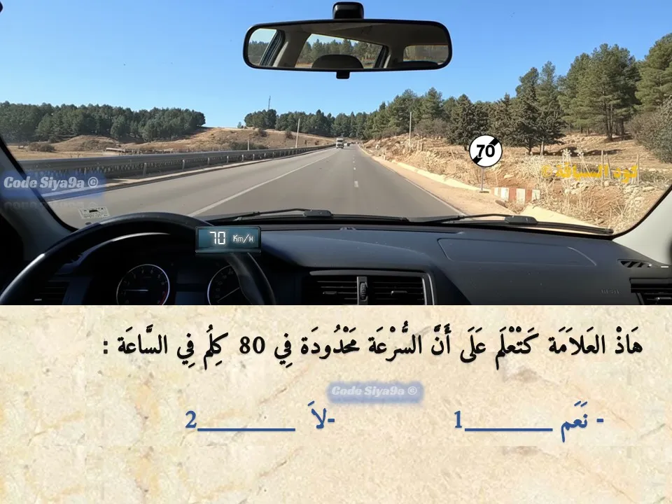
الجواب الصحيح: 2
هذا العلامة ديال نهاية المنع .
- كتعلم بلي ابتداءا من العلامة يمكن لي نمشي بسرعة أكبر من 70 كلم في الساعة.
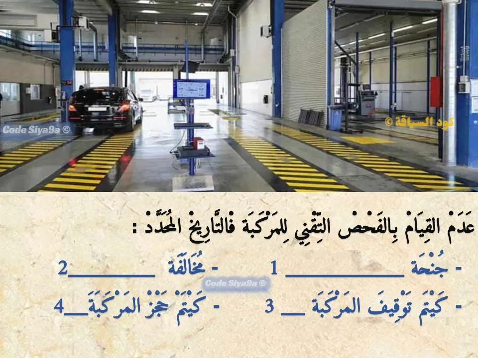
الجواب الصحيح: 2 و 3
عدم القيام بالفحص التقني كتعتبر مخالفة . كتأدي لتوقيف المركبة. خلال هذا العملية كيقوم عون محرر المحضر بالاحتفاظ بشهادة التسجيل ديال المركبة مع تسليم وصل لصاحب السيارة صالح لمدة 7 ايام من اجل القيام بالفحص التقني.
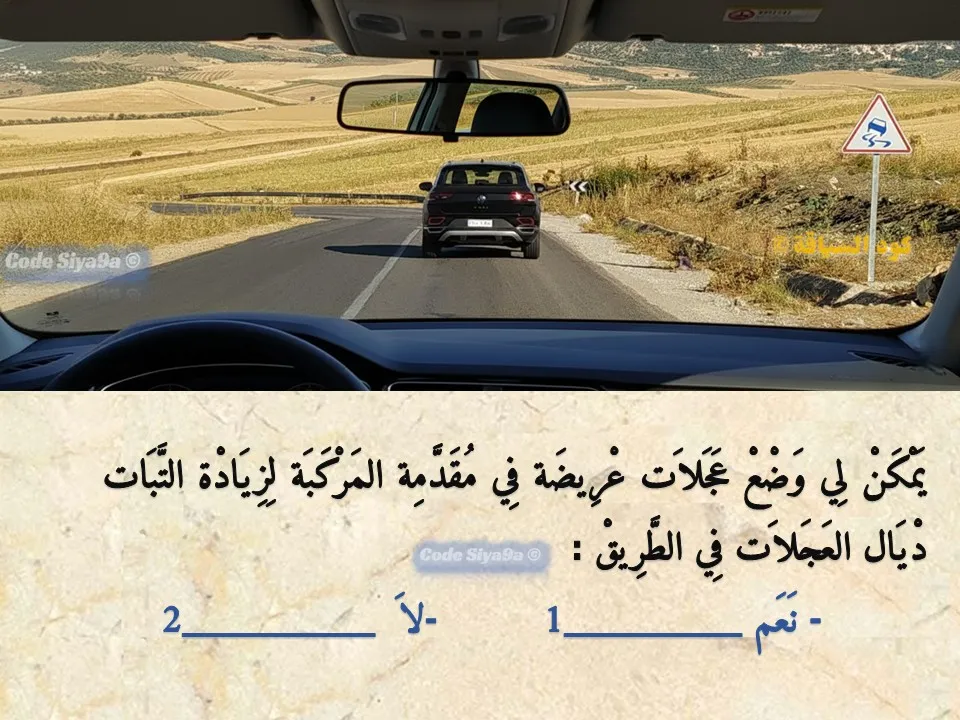
الجواب الصحيح: 2
استعمال عجلات ببنية مختلفة كيأثر على استقرار المركبة على الطريق .
و بالتالي ما يمكنش لي نستعمل عجلات ببنية مختلفة.
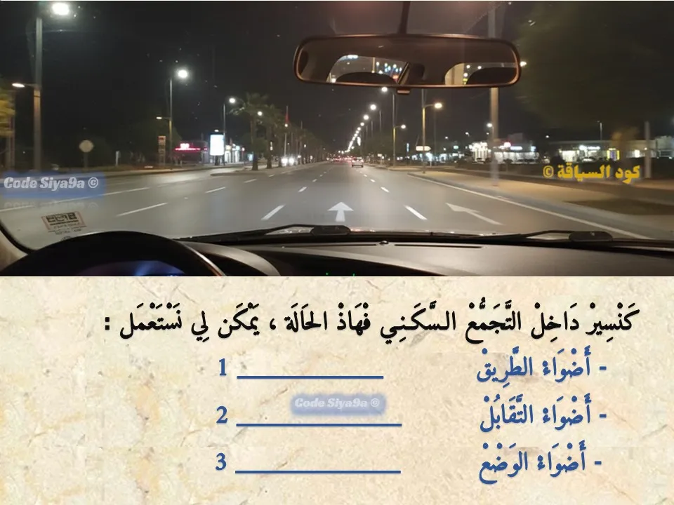
الجواب الصحيح: 2 و 3
في هذا الحالة كنسير داخل التجمع السكني. مع وجود إنارة عمومية.
- يمكن لي نستعمل اضواء الوضع بحدهم.
- يمكن لي نستعمل اضواء التقابل .
- يمكن لي نستعمل اضواء الوضع و التقابل.
⛔ ممنوع عليا نستعمل اضواء الطريق .
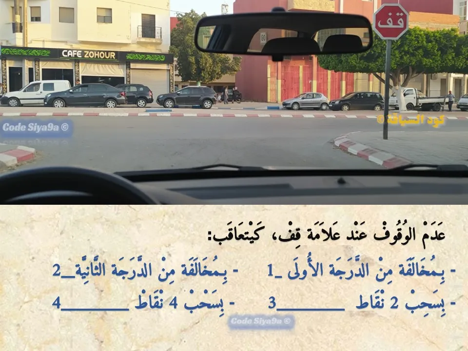
الجواب الصحيح: 1 و 4
عدم احترام إجبارية الوقف عند علامة قف ، كيتعتبر مخالفة من الدرجة الأولى. كتعرض السائق لغرامة ما بين 700 حتى 1400 درهم .
- و خصم 4 ديال النقط من رصيد رخصة السياقة.
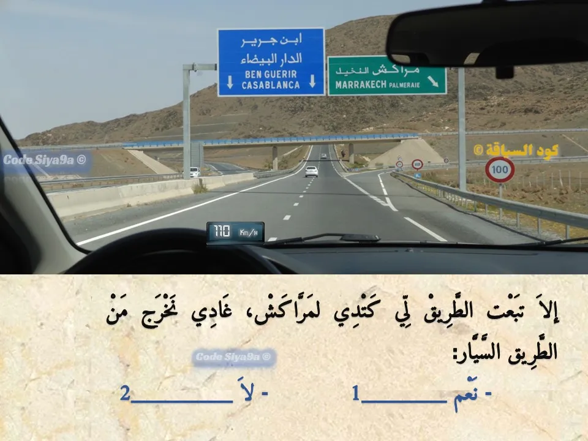
الجواب الصحيح: 1
التشوير الطرقي (العلامة ديال الارشاد بالاخضر مع سهم للأسفل جهة اليمين) كيعلم بلي الا تبعت الطريق لي كتدي لمراكش غادي نخرج من الطريق السيار.
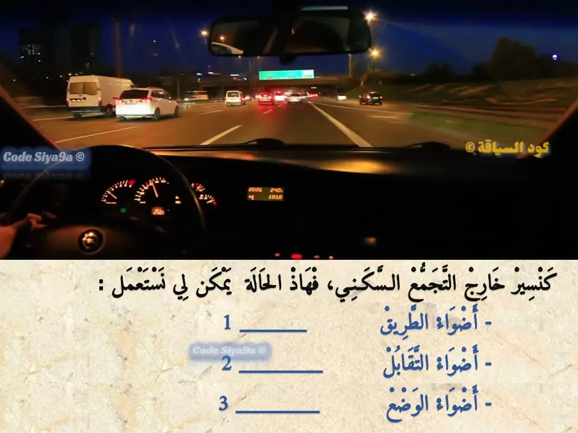
الجواب الصحيح: 2 و 3
في هذا الحالة كنسير خارج التجمع السكني.
- يمكن لي نستعمل اضواء التقابل .
- يمكن لي نستعمل اضواء الوضع و التقابل في نفس الوقت.
⛔ ممنوع عليا نستعمل اضواء الطريق لان هناك عربات قدامي واجب عليا نسير الان باضواء التقابل.
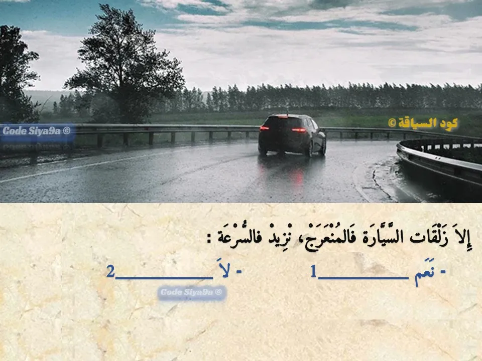
الجواب الصحيح: 2
منين تكون الطريق كتزلق واجب عليا ننقص من السرعة.
- في هذا الحالة ما خاصنيش نزيد في السرعة حيت غادي نزيد من انزلاق السيارة .
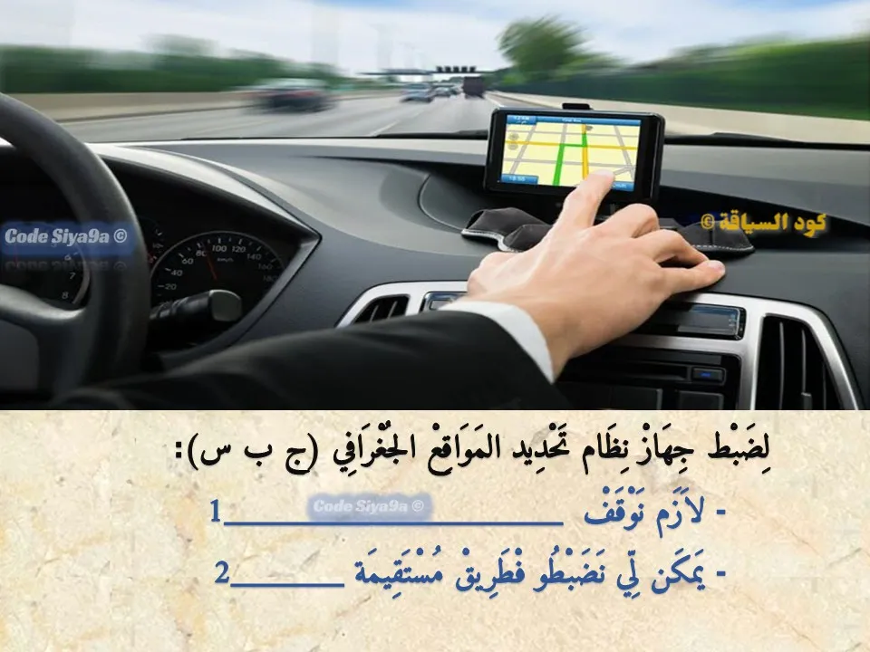
الجواب الصحيح: 1
باش نضبط جهاز gps او bluetooth واحب نوقف حيت ثانية ديال عدم الانتباه ممكن تسبب في حادثة .
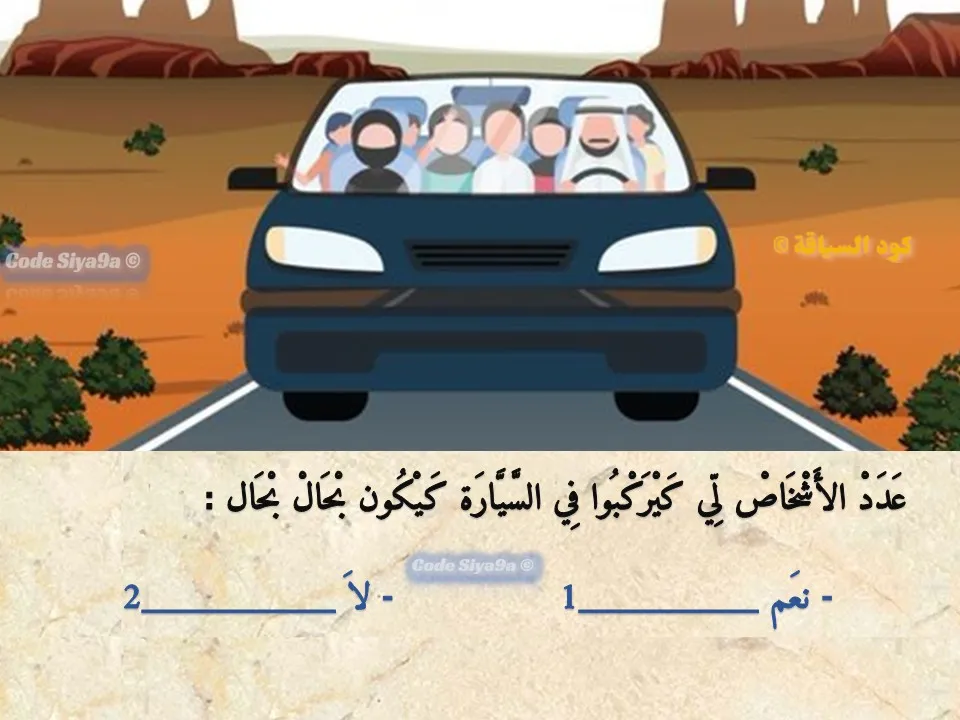
الجواب الصحيح: 2
عدد الاشخاص لي ممكن يركبوا في السيارة كيختلف من سيارة الى أخرى.
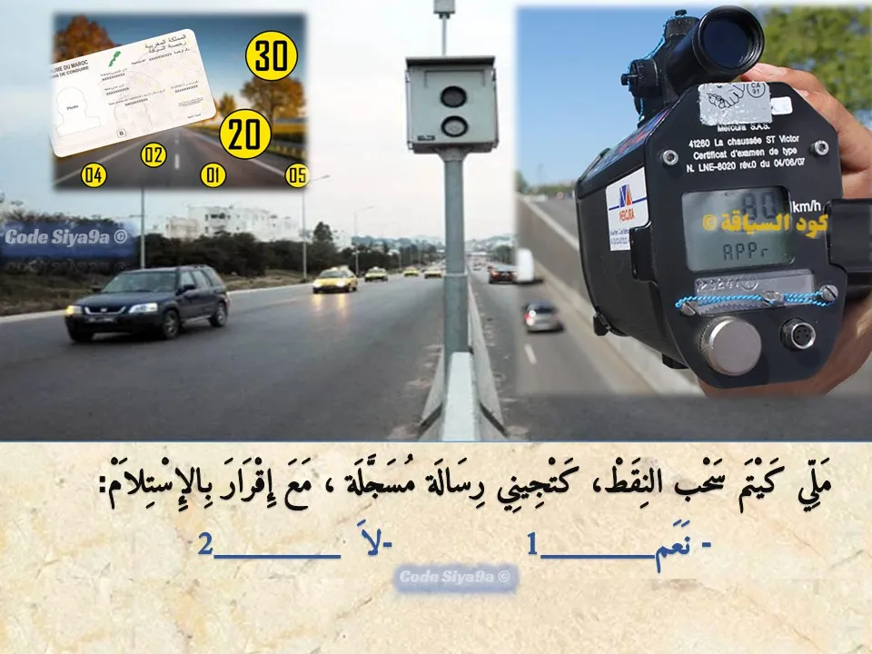
الجواب الصحيح: 1
منين كيتم ارتكاب مخالفة كتستوجب سحب النقط . يتم اشعار السائق عن طريق رسالة مسجلة . مع اقرار بالاستلام .
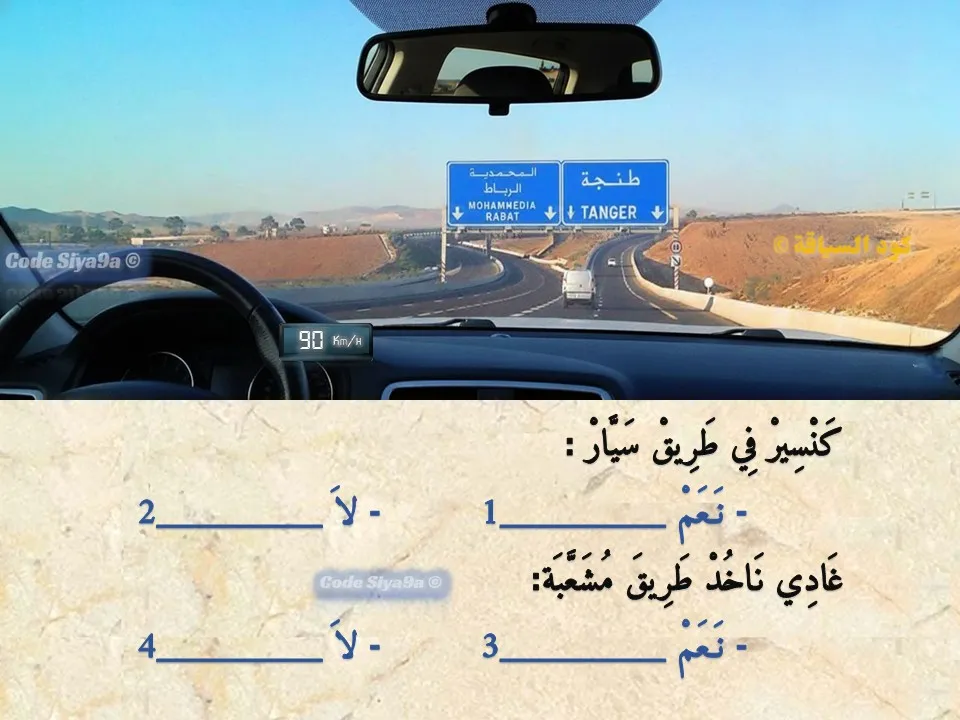
الجواب الصحيح: 1 و 3
التشوير الطريق و الحواجز و المسلك الاستعجالي كيدل على انني كنسير في طريق سيار.
هذا العلامة ديال الارشاد كتعلم على انشعاب (تشعب )على الطريق السيار.
- الا خديت الطريق لي كتمشي لطنجة غادي ناخط طريق سيار و في نفس الحالة الحالة الا خديت الطريق لي كتمشي للمحمدية غادي نبقى في الطريق السيار.
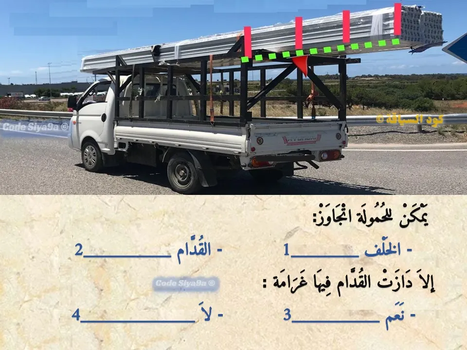
الجواب الصحيح: 1 و 3
الحمولة يمكن تجاوز الخلف ديال المركبة بحدوا . بطول 3 متر على مؤخرة المركبة .
- في حالة تجاوزات القدام ديال المركبة كتعتبر مخالفة .
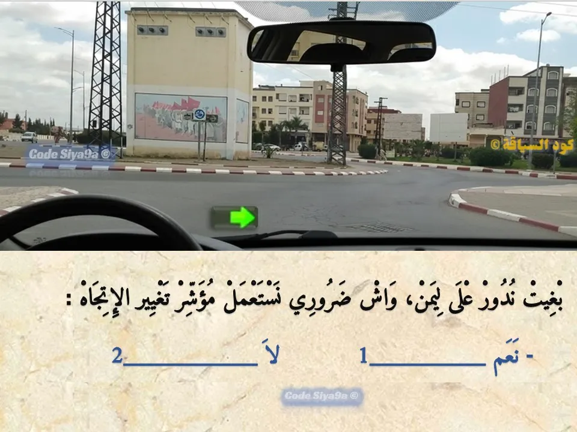
الجواب الصحيح: 1
عدم استعمال مؤشر تغيير الاتجاه عند تغير الإتجاه او المسلك يعتبر مخالفة من الدرجة الثالثة كيتعاقب بغرامة 200 حتى ل 400 درهم . و ما كياديش لسحب النقط .
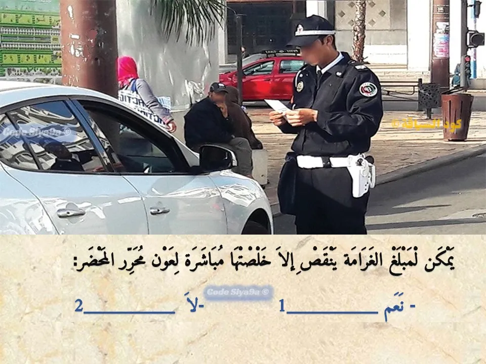
الجواب الصحيح: 1
في حالة اداء الغرامة في نفس اليوم ارتكاب المخالفة او مباشرة بعون محرر المحضر.
- كيتم تخفيض الثمن ديالها مثلا مخالفة من الدرجة الأولى الثمن ديال هو 700 دهم الا خلصتها في عين المكان او في نفس اليوم كيصبح المبلغ هو 400 درهم .
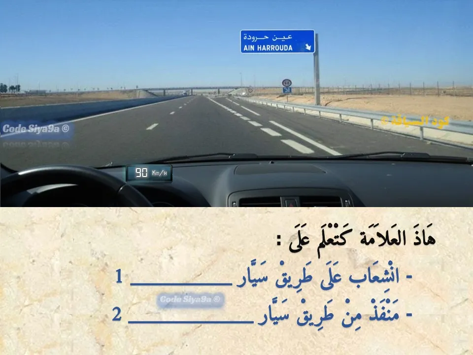
الجواب الصحيح: 2
هذا العلامة ديال الارشاد كتعلم على مخرج من الطريق السيار.
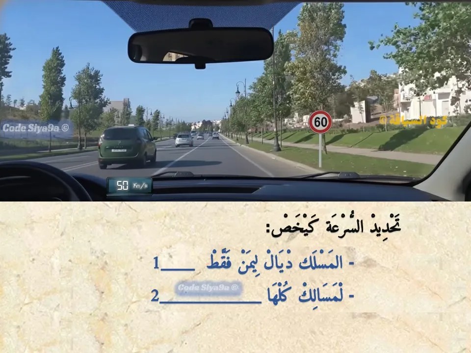
الجواب الصحيح: 2
في هذا الحالة عندنا علامة منع بحدها بدون علامة تكميلية . اذن المنع كيطبق على جميع المسالك .